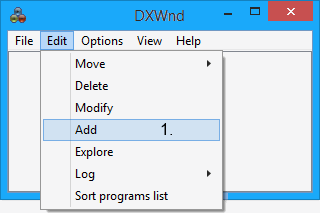

Beginners Tutorial
Adding a game into Dxwnd:
When you first start Dxwnd you should see the following screen:

Now lets start by adding a path from your games executable to Dxwnd.
1. Click on EDIT->ADD and the following screen should appear:
(Or alternatively you can simply drag & drop the games executable file into the DxWnd main window.)

2. Now click on the "..." button on the Path: field and navigate to your games installation directory.
3. Navigate to your game executable (for example D:\VRally3\Vrally3.exe).
4. The game executable is now selected and if you click OK a new entry will appear in the Dxwnd main window for your game.
This is all that is needed to hook your game to Dxwnd using the default options. If you then double click on the created entry the game should start in the default 800x600 window. However you will probably want to customize your game window size and tweak some other options which we will cover later in this tutorial.
TIP: Once the game is configured in Dxwnd you can also start the game from its normal shortcut (provided Dxwnd is running in the background). This is especially useful when running Steam games that need to be started from the Steam interface.
Using a pre-made .dxw configuration file:

Another way to star using Dxwnd is to import a pre-made configuration file for the game you are about to run. To do this click on FILE->IMPORT and navigate to the Dxwnd\exports\ folder. From here select the name of the entry that corresponds to the name of the game you are about to run. For example V-Rally 3.dxw and click OK.
A new entry should now appear on the Dxwnd main window. However this entry will most likely not work before you update the path field to match the location of the game on your hard drive. To do this select the entry and then choose EDIT->MODIFY.
NOTE: Using a pre-made configuration for a game is useful when the game does not run with the Dxwnd default settings. However these configurations may not always be up to date. A good tactic is to first try and manually add the game executable to Dxwnd and if the game does not work properly then try using the configuration files in the exports folder.
Using the Launch field:
Some games need a launcher executable to start the actual game. In these cases the Launch field must be used to point to the launcher executable. For example for the game Outcast the launcher is Outcast.exe and the main program is Oc3.exe.
Another use of the launch field is to configure command line arguments for the game. In this example the game Abe's Oddyssee is configured with the command line option "-interlane".
Configuring the window size & position:
Now that we have the game running with the default settings we can start customizing the window size by going back to the main tab (right click on game entry and select modify).
From here it is possible to specify any required "Window initial position & size". If you are running an older game that had a low resolution like 640x480 a good quality can be achieved by doubling the window size to 1280x960. You can specify any window resolution you want but keep in mind that certain resolutions might produce a poor image quality.
By default the option "X,Y coordinates" is selected and this option will obey your window position and resolution values.
By selecting the option "Desktop center" the position values are ignored and the window is always placed in the center of the screen.
If you choose the "Desktop work area" option both window position and size will be ignored and the window will automatically use your desktop area without covering the task bar at the bottom.
Selecting the "Desktop" option will use the whole screen as if the game was running in fullscreen mode.
"Keep aspect ratio" is useful With "Desktop work area" and "Desktop" options and will ensure that the image maintains the proper aspect ratio.
"Hide desktop background" can be used to fill the desktop background with black.
A fairly good option is to select the flags "Keep aspect ratio" and "Desktop work area":

See: Main > Position for more information.
Changing the path and/or icon of a configuration using Drag and Drop:
To update the path simply drag and drop the executable over the Path field. (1.)
To update only the icon to a different one simply drag and drop the executable over the icon. (2.)
Basic troubleshooting:
-
Note that Dxwnd currently supports only 32-bit executables. Also programs using DirectX versions higher than 9 generally do not hook properly.
-
If a game refuses to run with dxwnd make sure to run Dxwnd with administrators rights. Right click on Dxwnd.exe and choose "Run as administrator". You should also make sure that the game executable you are about to run does not have any compatibility modes set. Right click on the executable and navigate to the compatibility tab making sure no options are selected there.
-
If the game exits when you resize or minimize the window check that the Dxwnd "main" tab option "Do not notify on task switch" is enabled.
-
If the game window is not scaling correctly try ebabling the "Libs" tab option "Scaled GDI calls".
-
If you want the mouse cursor to stay inside the game window you can try setting the "Cursor Clipper" option to ON in the "Input" tab.
-
To improve the image quality especially when running a game in a custom resolution you can use the filters available in the DirectX tab. See: DirectX > Filtering for more information.
-
GOG games may have troubles running through Dxwnd. This is usually caused by custom wrapper DLL files that are shipped with GOG games. You may try to rename these DLL files in the game folder to disable them (e.g. ddraw.dll). In addition Dxwnd Compat. tab has the flags "Hook GOG libs" and "Bypass GOG libs" that may help with some games.